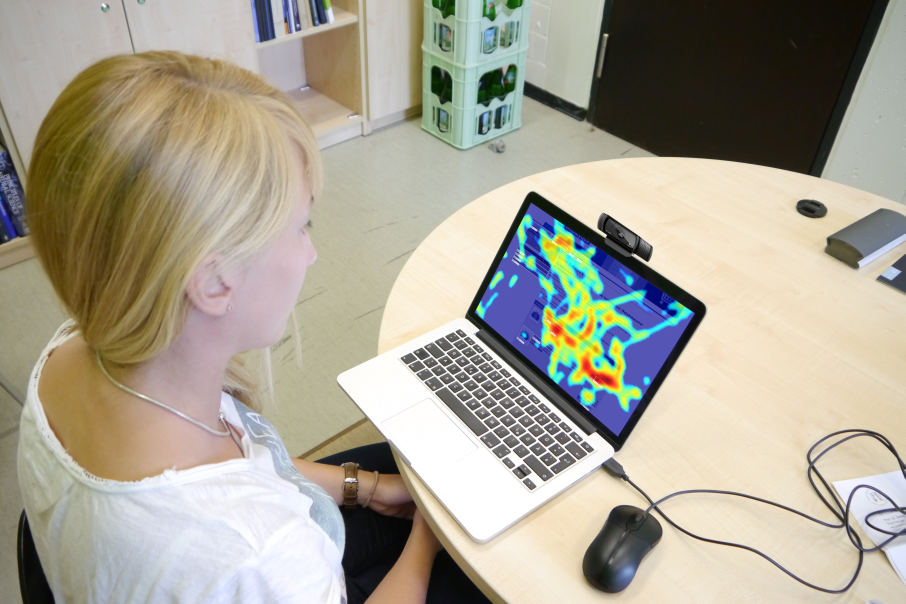
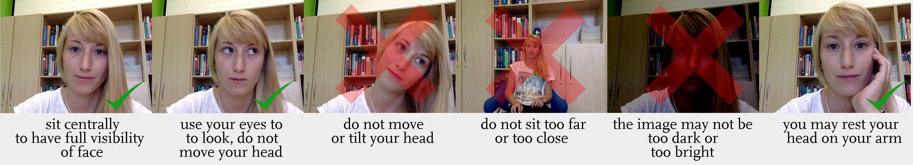

What attracts the attention of humans?
How can we help to improve these skills?

This scientific study tries to find out, whether we are able to use consumer-grade webcams to conduct research data in cognitive psychology. It is a simple viewing task, in which you will be shown dots and faces and only have to look at them.
Consent
Before continuing, please accept this consent form.
Hereby you allow us to record and analyze eye movements and other information that you indicate for a scientific study.
[INSERT OTHER CONSENT FORM INFORMATION HERE]
Other data we are saving:
- Your age, if you provide it
- etc..
Data
Thank your very much for your participation. Please fill out the following form:
Please note: There will be no diagnosis of psychological of cognitive factors. For further information on the topic Autism, please visit www.autism.com.
Webcam Setup
You can take a short break and move your head. Before continuing, please follow the instructions noted below.
Please turn off your mobile phone and close all other programs and websites. Then carefully read and follow these instructions:

This studdy consists of multiple five-minute parts with pauses inbetween. After you clicked "start", please avoid moving your head. If you move too much, the calibration can fail and you might not be able to finish the study.
Foto
It would be benificial to our study to know how you are seated and what quality your webcam has. May we save a picture through your webcam for these questions?
Thank you!
Thank you very much for your participation in this study.
The study is completed. If you want to tell us something, please use the form below. If you want us to respond, please also note an e-mail address we can reach you at.
If you want to be notified about the results of the study, please click here.
Crowdflower code: j8ehAi
Access to your webcam will automatically be terminated through closing this browser tab.